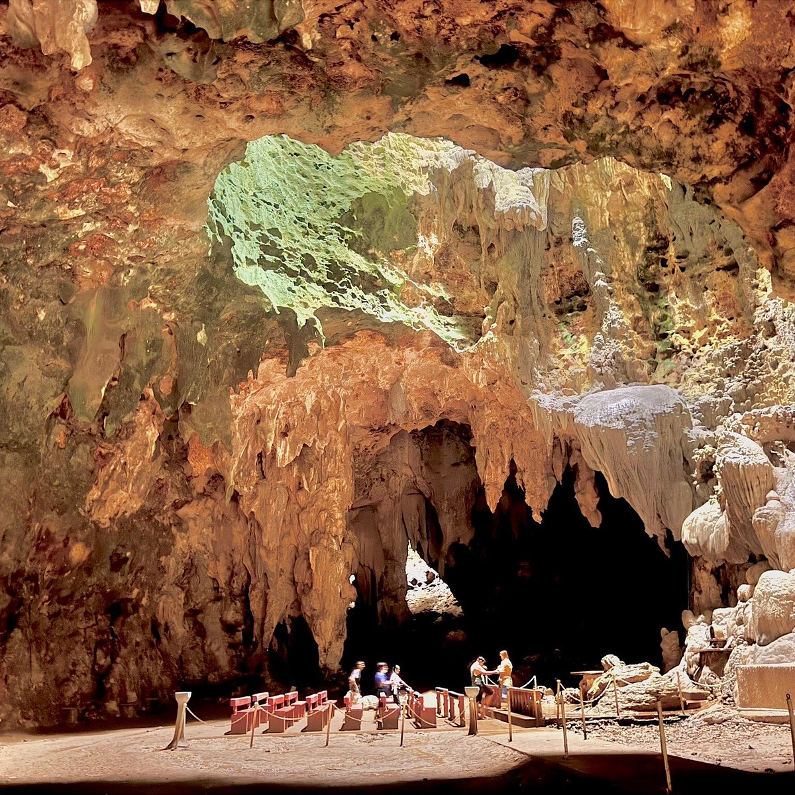
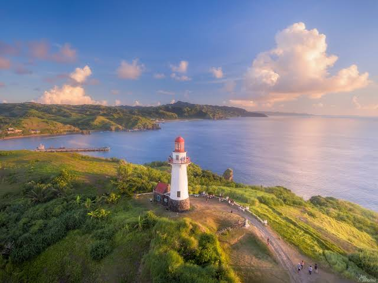
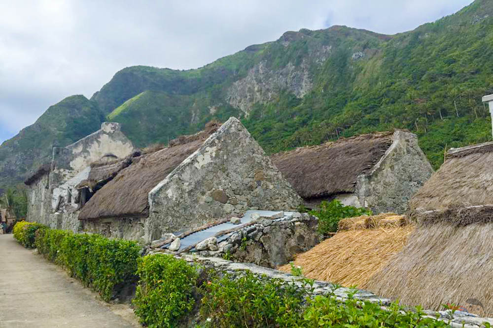
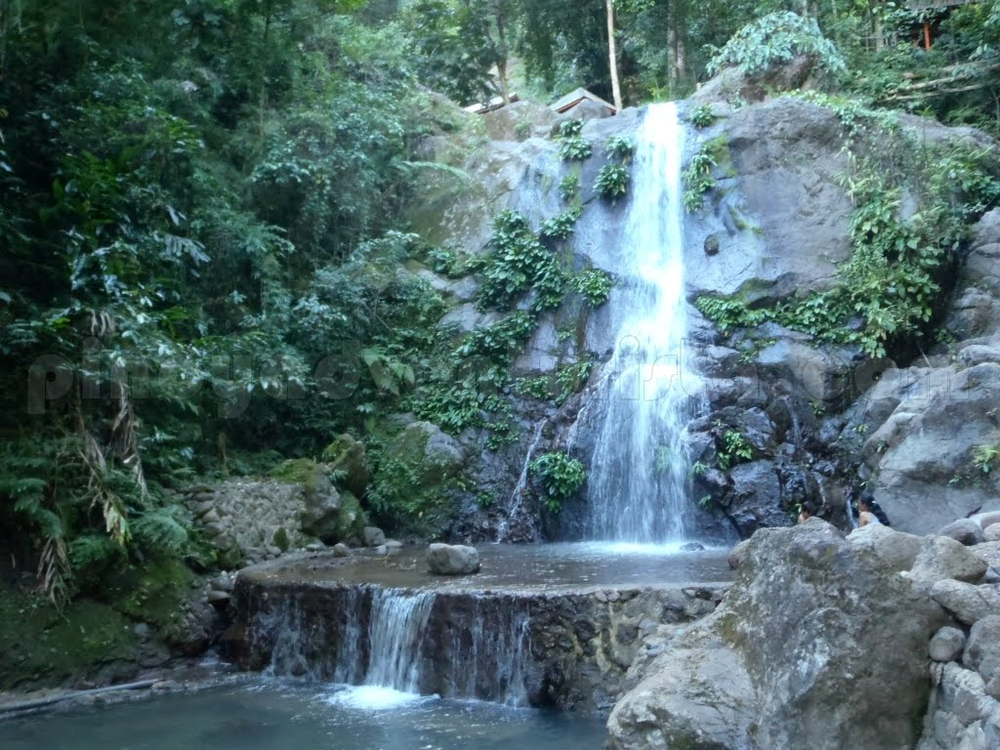
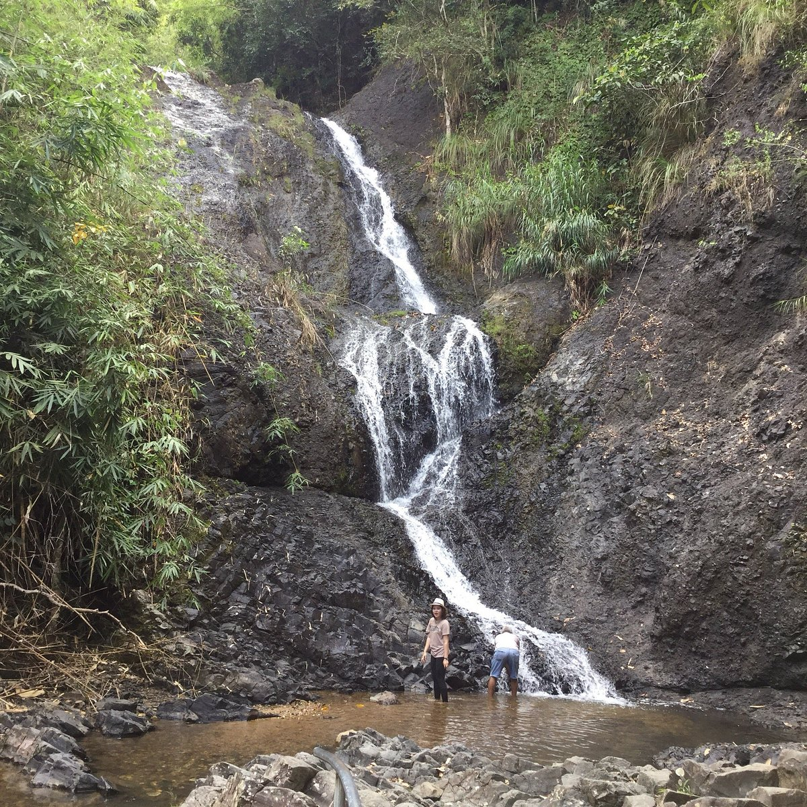

Callao Cave
A limestone cave with seven chambers, lit by sunlight that pours through openings in the ceiling. A small chapel stands in the second chamber. The cave is also where the Callao Man fossil was found.
Location: Peñablanca, Cagayan

Palaui Island
A protected island with white sand coves, forest trails, and the Cape Engaño Lighthouse. Boats leave from San Vicente and the trip takes about 20 minutes.
Location: Santa Ana, Cagayan

Basco Lighthouse (Naidi Hills)
A white lighthouse on a green hill above the town of Basco. The view takes in the grasslands, the coast, and the Pacific Ocean.
Location: Basco, Batanes

Sabtang Stone Houses
Traditional Ivatan houses built from thick limestone walls and thatched roofs to survive typhoons. Visit the village of Chavayan to see them up close.
Location: Sabtang, Batanes

Pinzal Falls
A wide, tiered waterfall that flows into cool pools surrounded by forest. It is a good place to swim after the hike down.
Location: Maddela, Quirino

Fuyot Springs National Park
A forest park with a clear spring, shaded picnic areas, and trails. A calm stop for families and groups.
Location: Ilagan, Isabela